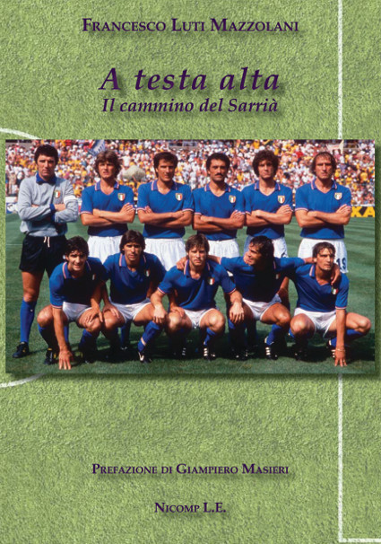

Francesco Luti: Noticias
|  |
Antognoni. A testa alta. Libro Francesco LutiDa anni residente a Barcellona, l’autore ripercorre i momenti cruciali del suo “idolo” d’infanzia, il calciatore della Nazionale Giancarlo Antognoni. Lo fa attraverso il filtro del se stesso di allora, un bambino di poco più di dieci anni che si recava allo stadio di Firenze col padre.Tuttavia, queste pagine rievocano minuziosamente la partita di Barcellona del luglio 1982 tra Italia e Brasile, nella quale Antognoni sarà tra i protagonisti. La partita del Sarrià, a distanza di trentadue anni conserva un sapore mitico perché spianò la strada all’Italia per la conquista della Coppa del Mondo. Lo stadio Sarrià che non c’è più, senza neanche una targa commemorativa che lo ricordi, come non fosse mai esistito. Il Sarrià rivive nel racconto dell’autore che ricostruisce il clima di quella partita anche attraverso testimonianze inedite. Come quella del maître d’Hôtel che seguì i passi degli azzurri nei quindici giorni di ritiro blindato (vietato anche alla stampa) a Barcellona; o di coloro che predisposero il campo e gli spogliatoi nei minimi dettagli. Luti viaggia fino in Brasile dietro il fantasma di quella gara per incontrarsi con Leandro, il difensore che corse a scambiare la maglia con Antognoni.   |